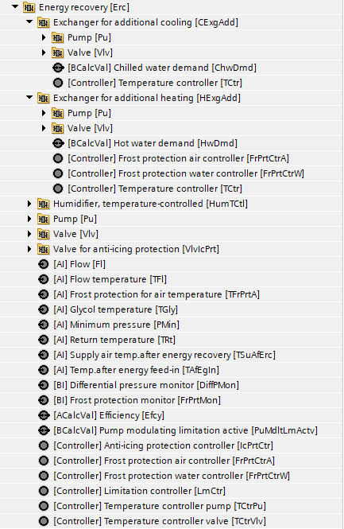
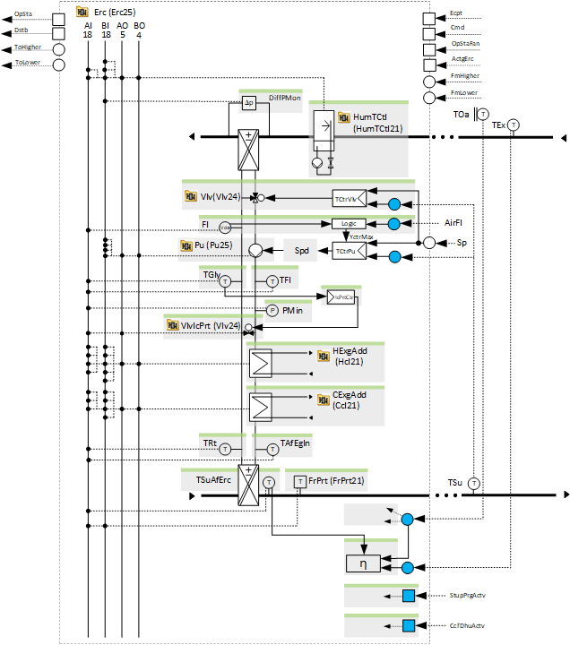
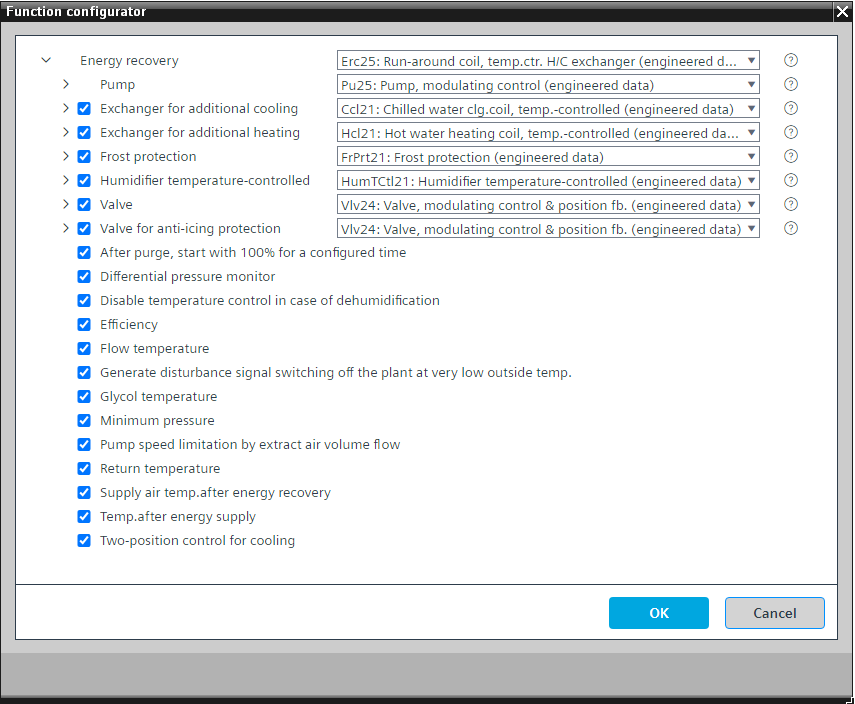
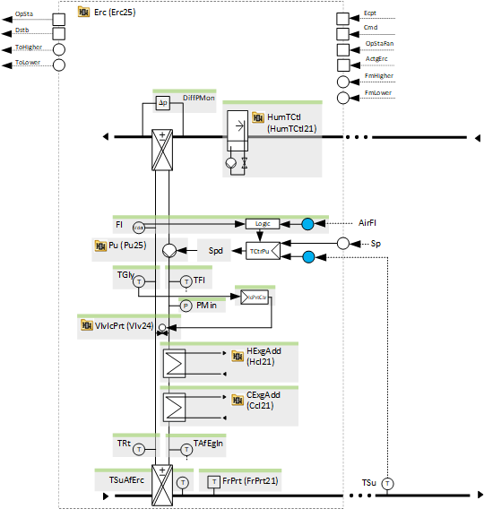
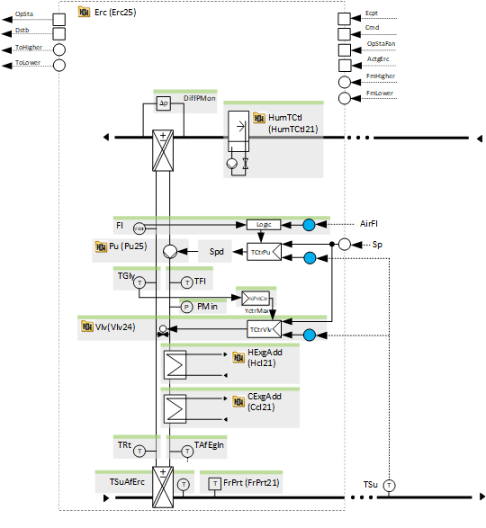
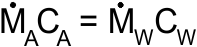
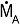
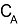
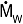
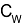

[Erc25] 循环盘管，通过冷热交换器进行温度控制
Program block, name / node subtype: [Erc25] Run-around coil, temperature-controlled with heat and cool exchanger
Library hierarchy: Ventilation and air conditioning equipment
Family: Erc
项目树 | 图表 |
|---|---|
|
 |  |
Configurator


程序块存储在没有 I/Os. 的库中 使用auto-create and auto-connect函数创建 I/Os 和 /or 将它们连接到接口块，例如 R_A、CMD_B。或者，从包含库中预定义 I/Os 的文件夹中取出 I/Os，并从工厂中取出 /or，并将它们连接到接口块。
通过更改以下参数来控制送风温度（加热和冷却）：
- pump speed of a variable speed pump
- valve position of an optional bypass valve
- output power of optional heat exchangers for additional heating and cooling
- output power of a humidifier for adiabatic cooling of the extract air
一些温度控制器（泵和可选阀门的控制器）根据另一个程序块的条件动态改变其控制动作以进行加热或冷却。
最小和最大泵速可以在程序中参数化。最大泵速可以通过可选逻辑来定义，以限制其遵循抽气体积流量。
温度控制器有几个，依次为：
- A temperature controller in the optional exchanger for additional heating
- A temperature controller for the pump
- A temperature controller for the optional valve
- A temperature controller in the optional humidifier for adiabatic cooling
- A temperature controller in the optional exchanger for additional cooling
Sequence for heating
当泵以最低速度运行时，阀门的温度控制器会增加其输出并关闭旁通阀。当阀门温度控制器达到最大值（旁通阀关闭）时，泵温度控制器接管并将泵速增加到最大泵速。当泵的温度控制器达到最大值时，用于额外加热的交换器中的温度控制器将接管。
Sequence for cooling
阀门的温度控制器设置为最大值，泵的温度控制器接管。如果“冷却双位控制”选项处于活动状态，则泵的温度控制器将达到最大值，或者连续将泵速度增加至最大值。当泵的温度控制器达到最大值时，加湿器中用于绝热冷却的温度控制器接管。当温度达到最大值时，交换器中用于额外冷却的温度控制器将接管工作。
该程序块具有以下可选功能：
Option: Exchanger for additional cooling (1xBO, 1xAO, 4xBI, 3xAI)
控制冷却交换器，该交换器提供额外的冷却能量，并且是送风 (Ccl21) 温度控制序列的一部分。
除了 Ccl21 之外，我们不推荐任何其他替代品。
Option: Exchanger for additional heating (1xBO, 1xAO, 5xBI, 4xAI)
控制提供额外热能的热交换器，并且是送风 (Hcl21) 温度控制序列的一部分。
除 Hcl21 外，我们不推荐任何其他替代品。
Option: Frost protection (1xBI, 1xAI)
执行防冻保护 (FrPrt21)。
能量回收和“额外加热交换器”都有可选图表“防霜”。
对于能量回收中的“防霜保护”：删除“防霜水控制器”选项。
对于“附加加热交换器”中的“防霜保护”：如果存在回水温度，请保留“防霜水控制器”选项。在能量回收中，可以保留“防霜保护”和“防霜空气控制器”并连接到相应的 I/Os、“FrPrtMon”和“TFrPrtA”。
Option: Humidifier temperature-controlled (1xBO, 1xAO, 3xBI, 2xAI)
控制加湿器以绝热冷却抽气，并且是送风控制序列的一部分 (HumTCtl21)。
Option: Valve (1xAO, 1xAI)
控制旁通阀的位置，以增加或减少能量回收的功率 (Vlv24)。
Option: Valve for anti-icing protection (1xAO, 1xAI)
控制支持防冰保护 (Vlv24) 的阀门的位置。
如果只有 1 个阀门，则有 2 种可能性：
1.阀门支持防腐蚀保护。该阀门不是温度控制序列的一部分。这是小尺寸泵后旁路中的二通阀。

2. 阀门支持防腐蚀保护。该阀门是温度控制序列的一部分。这可能是泵后旁路中的阀门或三通阀（手动设置 Sel(VlvType).K=1。

Option: After purge, start with 100 % for a configured time
提供“启动净化”功能和逻辑状态的接口，以在“启动净化”功能完成后将能量恢复保持在 100 % 可配置的时间（例如 4 分钟）。
Option: Differential pressure monitor (1xBI)
读取能量回收过程中压差监测器的信号。如果由于能量回收骨料表面结冰而导致压差增大，则会降低温度控制器的输出，以便阀门执行防冰保护。
Option: Disable temperature control in case of dehumidification
提供一个接口（最有可能是冷却盘管）和逻辑，以在除湿时禁用温度控制，以便在冷却盘管执行除湿时不预热空气。
如果将能量回收设置为冷却，则其以 100% 运行。
Option: Efficiency
计算能量回收的效率。程序中使用了功能块 MON_ERC。
此效率计算需要选项“能量回收后的送风温度”。
Option: Flow temperature (1xAI)
读取来自流量温度传感器的信号。
Option: Generate disturbance signal switching off the plant at very low outside temperature
如果在室外温度很低的情况下能量回收出现问题，加热功率可能会不足，导致送风温度可能会下降到高于防冻保护的水平，但仍然很不舒服。这就是产生关闭空气处理机组的干扰信号的原因。
Option: Glycol temperature (1xAI)
读取来自乙二醇温度传感器的信号，并使用 PID 控制器执行防冰保护，该控制器限制温度控制器到阀门的输出并持续打开旁路。
Option Minimum pressure (1xAI)
读取乙二醇回路中压力传感器的信号，如果压力过低则生成警报。
Option: Pump speed limitation by extract air volume flow
根据空气体积流量计算最佳最大泵速。
为了实现最佳的能量回收效率，必须满足以下等式定义的标准：

空气的热容量=传热介质的热容量

= 空气质量流量
= 空气的比热容
= 质量流量传热介质
= 传热介质的比热容在调试过程中，Ṁ之间的关系w并可测量泵速。在此基础上，计算空气质量流量和泵速之间的关系并在程序（CHAR_LIN）中建立。这有助于将传热介质的质量流量保持在最佳水平，并防止其过高。
如果泵速不受限制，则可能存在一个范围，例如70-100%，其中温度控制器的输出增加，而能量回收的功率不增加。温度控制器保留令牌直到达到最大输出。最大输出不受热容量比较的限制。温度控制序列中的下一个聚合需要更长的时间才能被释放以进行控制，并且总功率输出再次增加。
Option: Return temperature (1xAI)
读取来自流量温度传感器的信号。
Option: Supply air temperature after energy recovery (1xAI)
能量回收后读取送风温度传感器的信号。
这是ErcUtzRate21计算能量回收利用率的重要传感器。
Option: Temperature after energy supply (1xAI)
读取交换器后面的温度传感器的信号，以进行额外的加热和冷却。
Option: Two-position control for cooling
冷却时温度控制器的2位控制方式。
姓名 | 描述 | 类型 | 报警/通知类 | 趋势/类型 |
|---|---|---|---|---|
Pu | Pump | N/A | N/A | |
TCtrPu | Temperature controller pump | Ctr: Controller | N/A | N/A |
姓名 | 描述 | 类型 | 报警/通知类 | 趋势/类型 |
|---|---|---|---|---|
|
Vlv | Valve | N/A | N/A | |
属于该元素的其他元素： TCtrVlv | Temperature controller valve | Ctr: Controller | ||||
HExgAdd | Exchanger for additional heating | N/A | N/A | |
CExgAdd | Exchanger for additional cooling | N/A | N/A | |
TGly
| Glycol temperature | AI：模拟输入 | No | 是的，2 |
属于该元素的其他元素： IcPrtCtr | Anti-icing protection controller | Ctr: Controller | ||||
VlvIcPrt | Valve for anti-icing protection | N/A | N/A | |
DiffPMon | Differential pressure monitor | BI：二进制输入 | 是的，8 | No |
TSuAfErc | Supply air temperature after energy recovery | AI：模拟输入 | No | 是的，2 |
Efcy | Efficiency | ACalcVal: Analog calculated value | No | No |
FrPrt | Frost protection | N/A | N/A | |
TAfEgIn | Temperature after energy supply | AI：模拟输入 | 是的，4 | 是的，2 |
TFl | Flow temperature | AI：模拟输入 | 是的，4 | 是的，2 |
TRt | Return temperature | AI：模拟输入 | 是的，4 | 是的，2 |
PMin | Minimum pressure | AI：模拟输入 | 是的，4 | 是的，3 |
描述 |
|---|
|
2 位冷却控制 |
清除后，以 100 % 开始一段配置的时间。 |
产生干扰信号，在室外温度极低的情况下关闭设备。 |
Disable temperature control in case of dehumidification |
Pump speed limitation by extract air volume flow Fl | Flow| AI：模拟输入 LmCtr | Limitation controller | Ctr: Controller 属于其他选项的元素： PuMdltLmActv | Pump modulating limitation active | BCalcVal: Binary calculated value |